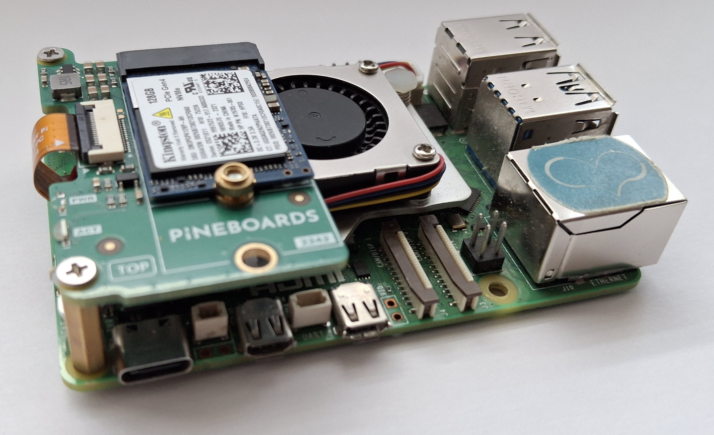

Micha1207 | Electronics & Computer science!
Page in HTML
Who am I?
Hi There! My name is Michael from Poland. My hobbies include:
- Electronics,
- Computers,
- Programming,
- GNU/Linux
I like to combine all of them. To see what devices I use, scroll down to "My Devices" section. If you're wondering what distribution of GNU/Linux I use: I've got Debian GNU/Linux.
My Devices
Let's start with computers:- Raspberry Pi 5 with 4GB RAM
- A Computer with Intel Core I7-12700K
- my old PC with Intel Core 2 Duo E7600
Yes, my Pi has "only" 4GB of RAM - that's enough for me. Plus I have 128GB NVMe SSD of which about 8GB.
The Computer with I7-12700K, which I call "PC-SRVR", has 16GB of RAM and 512GB SSD.
And the last PC with Core 2 Duo has 4GB RAM, 256GB storage and nVidia GeForce 9800GT 512M.
Here are some photos:
The Raspberry Pi 5:
PC-SRVR:

Now, look on my microcontrollers.
- Arduino UNO R3
- Arduino UNO R4 WiFi
- Arduino Nano ESP32
- Raspberry Pi Pico
- Raspberry Pi Pico W
- Raspberry Pi Pico 2W
- ESP32-S3-N16R8
- ESP8266
My PROJECTS
My projects are available on my GitHub. These work only on GNU/Linux, but after modifications they should work on other OSes too.
My Idols
My Idols are:
Linus Torvalds
Source: thenewstack.io
Linus created Linux Kernel - the "base" for all Linux Distributions like Ubuntu, Debian, Manjaro, Arch, Fedora, RHEL, Gentoo, etc. He wrote Linux Kernel - from zero - in 1991. And he still maintains Linux Kernel! Look here to see his quotes
Steve Jobs
Source: upload.wikimedia.org
{kind=link}
Steve - Very Clever person, Apple co-founder. You may be asking: "Why does he like Steve Jobs if he's GNU/Linux user?!" Well, he found Apple - a company, that revolutionized computers and phones. Also, he has nice, motivating quotes (listed here)
Their Quotes
Here are my favourite quotes from Linus and Steve:
Linus Torvalds: Talk is cheap. Show me the code.
Steve Jobs: Stay hungry. Stay foolish.
Web Pages about electronics
Check out the DroneBot Workshop webpage

Source: www.dronebotworkshop.com
Source: jeffgeerling.com